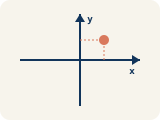
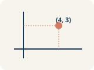
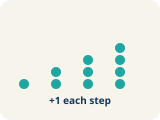
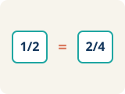
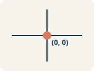

Unit 3 · Standard 6.RP.3a
Graph Ratio Tables
Key Vocabulary Level 1 Support Level 2 Standard Level 3 Enrichment
Picture first, then the word, then a plain-language meaning. Say each word out loud.

A + shape made by two number lines crossing at the center point (0, 0)
Coordinate plane
A grid with a line going across and a line going up to plot points.
Write the definition:
Explain this mathematical concept in your own words:

(3, 6) means go right 3, up 6
Ordered pair
Two numbers (x, y) that tell where a point is on a grid.
Write the definition:
Explain this mathematical concept in your own words:

(1,2), (2,4), (3,6) all line up
Linear pattern
Points that make a straight line on a grid.
Write the definition:
Explain this mathematical concept in your own words:

A straight line from (0,0) through (2,6) and (4,12)
Proportional
Two amounts that grow together at the same rate.
Write the definition:
Explain this mathematical concept in your own words:

The starting corner of the grid at (0, 0)
Origin
The point (0, 0) where the two grid lines cross.
Write the definition:
Explain this mathematical concept in your own words:
Key Ideas & Notes Level 1 Support Level 2 Standard Level 3 Enrichment
What we're learning today
I can graph the values from a ratio table as points on the coordinate plane.
Notice
Chef Academy students are tracking how much chocolate sauce they need for different numbers of sundaes.
Record your observations:
State the math observation you see in the launch:
Key idea
I can graph the values from a ratio table as points on the coordinate plane.
Record the key idea:
Summarize the key mathematical relationship in full sentences:
Words I'll use
Write a mathematical explanation using at least two of these terms:
🤔 Think About It
- What two quantities could we put on the x-axis and y-axis?
- What pattern do you see in the ratio table values?
- What do you think the graph will look like?
Watch the teacher model, fill in We Do together, and check your choice on You Do.
Follow each step as your teacher solves it.
Problem: A ratio table shows (2, 6), (4, 12), and (6, 18). Which ordered pair comes next if the pattern continues?
- (8, 24)
- (7, 20)
- (8, 22)
- (10, 24)
- Step 1 The pattern adds 2 to x and 6 to y each time.
- Step 2 After (6, 18): x = 6+2 = 8, y = 18+6 = 24.
- Step 3 The next point is (8, 24).
✅ Answer: A. (8, 24)
Solve this with your class by filling in the missing words or values.
Problem: When you graph equivalent ratios, the points will always form what shape?
- A straight line through the origin
- A curved line
- A zigzag
- A circle
- Step 1 The pattern adds _____ to x and _____ to y each time.
- Step 2 After (_____, _____): x = _____+_____ = _____, y = _____+_____ = _____.
- Step 3 The next point is (_____, _____).
Try it on your own. Fill in the steps.
Problem: A ratio table shows (2, 8), (3, 12), and (5, 20). What is the y-value when x = 7?
- 28
- 24
- 21
- 35
See the notes in action: watch one worked all the way through, then try the next with the same steps.
Follow each step as your teacher solves it.
Problem: A ratio table shows (2, 6), (4, 12), and (6, 18). Which ordered pair comes next if the pattern continues?
- (8, 24)
- (7, 20)
- (8, 22)
- (10, 24)
- Step 1 The pattern adds 2 to x and 6 to y each time.
- Step 2 After (6, 18): x = 6+2 = 8, y = 18+6 = 24.
- Step 3 The next point is (8, 24).
✅ Answer: A. (8, 24)
Solve this one with your class using the same steps.
Problem: When you graph equivalent ratios, the points will always form what shape?
- A straight line through the origin
- A curved line
- A zigzag
- A circle
- Step 1
- Step 2
- Step 3
Answer:
Now try one on your own. Show every step.
Problem: A ratio table shows (2, 8), (3, 12), and (5, 20). What is the y-value when x = 7?
- 28
- 24
- 21
- 35
No worked examples. Solve the problems independently, draw visual models, and write justifications.
Problem: A ratio table shows (2, 6), (4, 12), and (6, 18). Which ordered pair comes next if the pattern continues?
- (8, 24)
- (7, 20)
- (8, 22)
- (10, 24)
Writing Prompt: Formulate a mathematical representation or model for this situation. Explain why your model is appropriate.
Problem: When you graph equivalent ratios, the points will always form what shape?
- A straight line through the origin
- A curved line
- A zigzag
- A circle
Writing Prompt: Solve the problem. Then, write a rule or generalization that someone could use to solve any problem like this.
Problem: A ratio table shows (2, 8), (3, 12), and (5, 20). What is the y-value when x = 7?
- 28
- 24
- 21
- 35
Writing Prompt: Solve the problem. Create a real-world scenario that matches the operations or logic you used to solve this.
Turn & Talk — Discussion Points Level 1 Support Level 2 Standard Level 3 Enrichment
Talk with a partner about each prompt. If you need help getting started, use the Level 1 sentence stems. Ready for more? Try the Level 2 question.
The sundae recipe uses 2 ounces of chocolate sauce for every 1 sundae. Before you graph, what do you predict the points will look like, and which quantity goes on each axis?
Start here: I predict the points will line up because sundaes and sauce grow together.
💡 Need a hint?
Try starting with the word "Coordinate plane" or "Ordered pair". Re-read the question and underline what it is asking you to compare or find. Use one number or word from the problem as your evidence.
Sentence starters (optional)
I will put ___ on the x-axis and ___ on the y-axis.Pondré ___ en el eje x y ___ en el eje y.
I predict the points will form a ___.Predigo que los puntos formarán una ___.
Listen for: A strong answer chooses sundaes (x) and ounces of sauce (y), and predicts a straight line because each sundae always needs 2 more ounces.
Predict whether the line will pass through the origin (0, 0). Justify your prediction using what 0 sundaes would mean.
- The line will pass through the origin because ___ sundaes means ___ ounces.
- I can justify this because the ratio stays ___ even at zero.
After plotting (1,2), (2,4), (3,6)... what pattern do you notice, and how does it show the chocolate-sauce ratio?
Start here: The points form a straight line, and each sundae adds 2 ounces of sauce.
💡 Need a hint?
Try starting with the word "Coordinate plane" or "Ordered pair". Re-read the question and underline what it is asking you to compare or find. Use one number or word from the problem as your evidence.
Sentence starters (optional)
The points form a ___ through the ___.Los puntos forman una ___ que pasa por el ___.
As the number of sundaes goes up by 1, the ounces go up by ___.Cuando el número de copas sube en 1, las onzas suben en ___.
Listen for: Listen for 'straight line through the origin' and the connection that the constant 2-ounce step shows a proportional relationship.
Critique this claim: 'Any points that go up to the right form a proportional graph.' What would the points (1,2),(2,4),(3,7) show instead, and why?
- The claim is wrong because a proportional graph must also ___.
- The points (1,2),(2,4),(3,7) are NOT proportional because ___.
The food truck plots tacos vs. salsa and gets a straight line. What does that graph tell the owner about preparing salsa for ANY number of tacos?
Start here: The straight line lets the owner predict salsa for any taco amount.
💡 Need a hint?
Try starting with the word "Coordinate plane" or "Ordered pair". Re-read the question and underline what it is asking you to compare or find. Use one number or word from the problem as your evidence.
Sentence starters (optional)
This is like our graphing work because ___ and ___ are related by ___.Esto es como nuestro trabajo con gráficas porque ___ y ___ se relacionan por ___.
The graph lets the owner predict ___.La gráfica permite al dueño predecir ___.
Listen for: A strong answer says the proportional line lets the owner read off (or extend to) salsa amounts for taco counts not in the table.
Generalize: if the food-truck line were steeper than another truck's line, what would that tell you about how much salsa each truck uses per taco?
- A steeper line means ___ salsa per taco because ___.
- I can compare the two trucks by looking at ___.
Interactive Unit Projects
Apply your math skills in these interactive dashboard games and coding labs.
Unit 3 Project — Ratios in Action
Capstone project: apply ratio reasoning to a real-world challenge.
Recipe Factory Line
Plot equivalent ratios from a ratio table onto the coordinate plane.
Ratio Tables Game (6.RP.3a)
Complete ratio tables that pair with coordinate-plane graphs.
Write About the Math Level 1 Support Level 2 Standard Level 3 Enrichment
I can explain my graph using the words coordinate plane, ordered pair, origin, and proportional.
1. Kernel Sentence subject + verb
Model: Coordinate plane is a grid with a line going across and a line going up to plot points.Plano cartesiano es una cuadrícula con una línea horizontal y una vertical para marcar puntos.
Write a kernel sentence about coordinate plane. Use a subject and a verb.Escribe una oración base sobre plano cartesiano. Usa un sujeto y un verbo.
2. Sentence Expansion because · but · so
Kernel: Coordinate plane matters in mathPlano cartesiano importa en matemáticas
Expand the kernel three ways. Add a reason, a contrast, and a result.
Coordinate plane matters in math because ___.Plano cartesiano importa en matemáticas porque ___.
Coordinate plane matters in math, but ___.Plano cartesiano importa en matemáticas, pero ___.
Coordinate plane matters in math, so ___.Plano cartesiano importa en matemáticas, entonces ___.
3. Sentence Types 4 ways to write a math idea
Tell one true fact about coordinate plane.Di un hecho verdadero sobre coordinate plane.
Coordinate plane ___.
Ask a question about coordinate plane.Haz una pregunta sobre coordinate plane.
How does ___ ?¿Cómo ___ ?
Show excitement about coordinate plane.Muestra entusiasmo sobre coordinate plane.
Wow, ___ !¡Guau, ___ !
Tell a partner what to do with coordinate plane.Dile a un compañero qué hacer con coordinate plane.
First, ___ .Primero, ___ .
4. Explain Your Reasoning use a sentence starter
I will put ___ on the x-axis and ___ on the y-axis.Pondré ___ en el eje x y ___ en el eje y.
I predict the points will form a ___.Predigo que los puntos formarán una ___.
The points form a ___ through the ___.Los puntos forman una ___ que pasa por el ___.
Advanced Mathematical Explanation
Writing Prompt: Write an explanatory paragraph summarizing today's key mathematical concept. Your explanation must include at least one complex sentence using a conjunction (because, since, although, or unless) to justify your mathematical reasoning. Draw models or sketch graphs to support your argument.
Try It
Solve on your own. Check the answer key when you are done.
1. A line through the origin contains (3, 9). What is the unit rate (y per 1 x)?
- 3
- 1/3
- 6
- 9
2. Why do graphs of equivalent ratios start at the origin (0,0)?
- Because 0 of one quantity pairs with 0 of the other
- Because every line starts at zero
- Because ratios are always negative
- Because the y-axis is longer
Stretch Your Thinking Level 2 enrichment
Challenge task — explain your reasoning in full sentences.
A student plots the points (1, 3), (2, 6), (3, 9), and (4, 15) from a ratio table. She says they form a straight line because they go up. Is she correct? Explain how to check.
Reflect — Exit Ticket
A ratio table shows cups of rice to cups of water: (1, 2), (2, 4), (3, 6). If you plot these points, the line passes through which point?
- (5, 10)
- (4, 6)
- (5, 8)
- (6, 10)
Answer Key & Teacher Guide
- We Try (notes): A. A straight line through the origin — Equivalent ratios are proportional, so their graph is always a straight line that passes through the origin (0, 0).
- You Try (notes): A. 28 — The ratio is y/x = 8/2 = 4. For every x, y = 4x. When x = 7: y = 4 × 7 = 28.
- Try It 1: A. 3 — 9 ÷ 3 = 3, so y increases by 3 for each 1 unit of x.
- Try It 2: A. Because 0 of one quantity pairs with 0 of the other — When you have 0 of one amount you have 0 of the other, so the line passes through (0,0).
- Exit Ticket: A. (5, 10) — The ratio is 1:2, so for 5 cups of rice you need 5 × 2 = 10 cups of water. The point (5, 10) continues the pattern.
Writing (TWR) — what to look for
- Kernel sentence: A complete sentence needs a subject and a verb. Example: Coordinate plane is a grid with a line going across and a line going up to plot points.
- Expansion: because gives a reason, but shows a contrast or exception, so shows a result. Answers vary; each must keep the kernel idea and add the correct kind of detail.
- Sentence types: Statement ends with a period, question with "?", exclamation with "!", and a command starts with an action verb (a "bossy" verb).